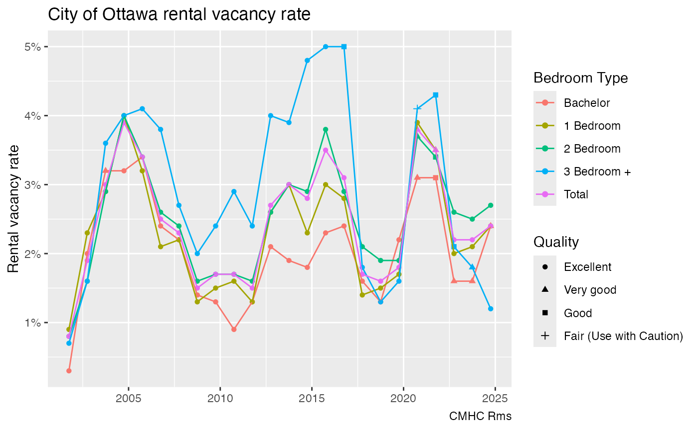
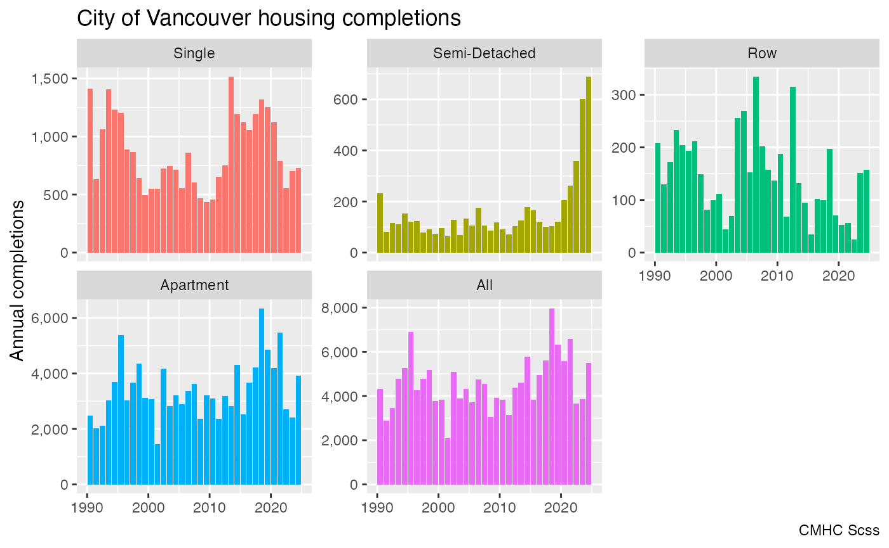

To list the CMHC tables available via the package we can call
list_cmhc_tables.
list_cmhc_tables() |>
head() |>
knitr::kable()| Survey | Series | Dimension | Breakdown | GeoFilter | Filters |
|---|---|---|---|---|---|
| Scss | Starts | Dwelling Type | Provinces | Default | Homeowner , Rental , Condo , Co-op , All , Single , Semi-detached, Row , Apartment , All |
| Scss | Starts | Dwelling Type | Centres | Default | Homeowner , Rental , Condo , Co-op , All , Single , Semi-detached, Row , Apartment , All |
| Scss | Starts | Dwelling Type | Survey Zones | Default | Homeowner , Rental , Condo , Co-op , All , Single , Semi-detached, Row , Apartment , All |
| Scss | Starts | Dwelling Type | Census Subdivision | Default | Homeowner , Rental , Condo , Co-op , All , Single , Semi-detached, Row , Apartment , All |
| Scss | Starts | Dwelling Type | Neighbourhoods | Default | Homeowner , Rental , Condo , Co-op , All , Single , Semi-detached, Row , Apartment , All |
| Scss | Starts | Dwelling Type | Census Tracts | Default | Homeowner , Rental , Condo , Co-op , All , Single , Semi-detached, Row , Apartment , All |
It lists all possible tables by survey, series, dimension and
breakdown, as well as the possible filters that can be applied. It is
often convenient to run the select_cmhc_table() interactive
query builder in the console to iteratively walk through building the
parameters for the get_cmhc() data query.
To access a time series for a region with census geographic
identifier geo_uid we use
breakdown="Historical Time Periods".
vacancy_data <- get_cmhc(survey="Rms",series="Vacancy Rate",dimension="Bedroom Type",
breakdown="Historical Time Periods", geo_uid="3506008")
ggplot(vacancy_data,aes(x=Date,y=Value/100,colour=`Bedroom Type`)) +
geom_point(aes(shape=Quality), data=~filter(.,!is.na(Value))) +
geom_line() +
scale_y_continuous(labels=scales::percent) +
labs(title="City of Ottawa rental vacancy rate",
x=NULL, y="Rental vacancy rate",
caption="CMHC Rms")
By default this fetches the data for the October survey only, in the
past the Rental Market Survey was conducted twice a year. We can pass a
filter option to access the April data and fold that in. We can explore
the possible filter values could be used for this series via the
list_cmhc_filters convenience function.
list_cmhc_filters("Rms","Vacancy Rate","Bedroom Type","Historical Time Periods")$Filters
#> [[1]]
#> [[1]]$dwelling_type_desc_en
#> [1] "Row / Apartment" "Row" "Apartment"
#>
#> [[1]]$season
#> [1] "October" "April"This tells us we could filter by dwelling type, with “Row” or “Apartment” as possible values, and by season, with “April” or “October” as possible values. We want the get April values to add to our existing data.
vacancy_data2 <- get_cmhc(survey="Rms",series="Vacancy Rate",dimension="Bedroom Type",
breakdown="Historical Time Periods", geo_uid="3506008",filters = list("season"="April"))
bind_rows(vacancy_data,vacancy_data2) |>
filter(!is.na(Value)) |>
ggplot(aes(x=Date,y=Value/100,colour=`Bedroom Type`)) +
geom_point(aes(shape=Quality), data=~filter(.,!is.na(Value))) +
geom_line() +
scale_y_continuous(labels=scales::percent) +
labs(title="City of Ottawa rental vacancy rate",
x=NULL, y="Rental vacancy rate",
caption="CMHC Rms")
Vacancy Rate shows the number of units that are vacant and not rented out at the time. A related metric is the Availability Rate, which measures if a unit is available for rent, including units where a tenant has given notice but has not moved out yet.
availability_rate <- c("April","October") |>
lapply(function(season)
get_cmhc(survey="Rms",series="Availability Rate",dimension="Bedroom Type",
breakdown="Historical Time Periods", geo_uid="3506008",filters = list("season"=season))) |>
bind_rows()
availability_rate |>
filter(!is.na(Value)) |>
ggplot(aes(x=Date,y=Value/100,colour=`Bedroom Type`)) +
geom_point(aes(shape=Quality), data=~filter(.,!is.na(Value))) +
geom_line() +
scale_y_continuous(labels=scales::percent) +
labs(title="City of Ottawa rental availability rate",
x=NULL, y="Rental availability rate",
caption="CMHC Rms")
As expected, the availability rate is higher than the vacancy rate, unfortunately the collection of availability rates was discontinued. Another related metrics is the turnover rate, but unfortunately this data is not published in the HMIP.
For data that is collected on a monthly basis, like the Survey of Starts and Completions (Scss) data, we can specify the frequency and also get annual or quarterly data. That makes things more efficient if we are just interested in annual data.
completions_data <- get_cmhc(survey="Scss",series="Completions",dimension="Dwelling Type",
breakdown="Historical Time Periods", geo_uid="5915022",
frequency = "Annual")
ggplot(completions_data,aes(x=Date,y=Value,fill=`Dwelling Type`)) +
geom_bar(stat="identity") +
facet_wrap(~`Dwelling Type`,scales="free_y") +
scale_fill_discrete(guide="none") +
scale_y_continuous(labels=scales::comma) +
labs(title="City of Vancouver housing completions",
x=NULL, y="Annual completions",
caption="CMHC Scss")
To get snapshot data for sub-geographies, we can select the breakdown geography type. This can be linked back with census geographies for plotting.
under_construction_data <- get_cmhc(survey="Scss",series="Under Construction",dimension="Dwelling Type",
breakdown="Census Tracts", geo_uid="5915022",
year = 2022, month = 4)
geo_data <- cancensus::get_census("CA16",regions=list(CSD="5915022"),geo_format = 'sf', level="CT", quiet=TRUE)
geo_data |>
left_join(under_construction_data |>
filter(`Dwelling Type`=="All"),
by="GeoUID") |>
mutate(value=cut(coalesce(Value,0),
breaks=c(-Inf,0,10,50,100,500,1000,1500,Inf),
labels=c("0","1 to 10","11 to 50","51 to 100","101 to 500",
"501 to 1000","1001 to 1500","Over 1500"))) |>
ggplot(aes(fill=value)) +
geom_sf() +
scale_fill_viridis_d() +
coord_sf(datum=NA) +
labs(title="City of Vancouver housing units under construction April 2022",
fill="Number of units",
caption="CMCH Scss")